Golden Rule for Researchers
"If a photo is important, take at least three versions. If a video is important, record at least 5 Minutes before and after the action."
That simple habit prevents most field documentation mistakes.
Clean the Lens First
Many blurry photos come from a dirty lens. Fingerprints, pocket lint, and dust compromise visual reliability.
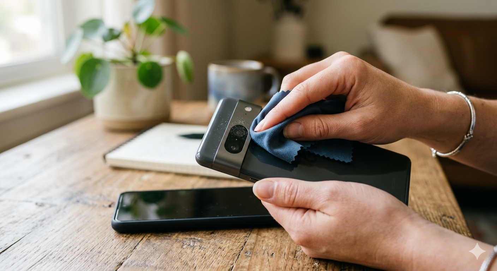
Use the Highest Quality Settings
Pre-Field Configuration Protocol
- Enable maximum photo resolution.
- Record video in 4K (if storage allows).
- Use 1080p at 30fps or 60fps when storage is limited.
- Turn on HDR when lighting is difficult.
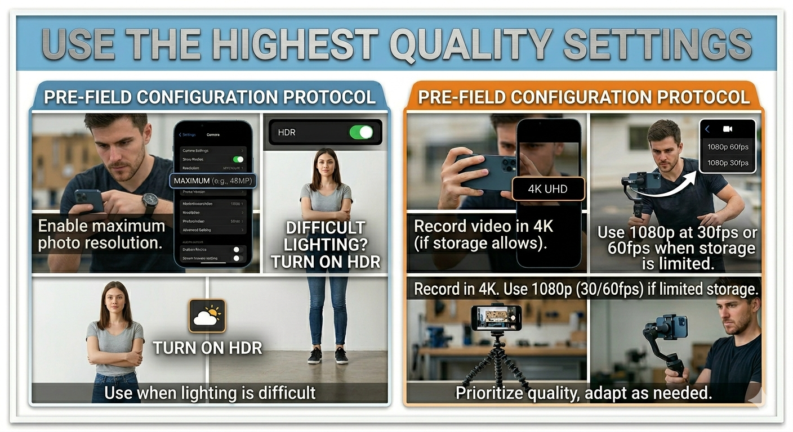
Hold the Phone Properly
- Hold with both hands.
- Keep elbows close to your body.
- Avoid taking photos while walking.
- Use both hands.
- Move slowly and smoothly.
- If possible, use a tripod or gimbal.
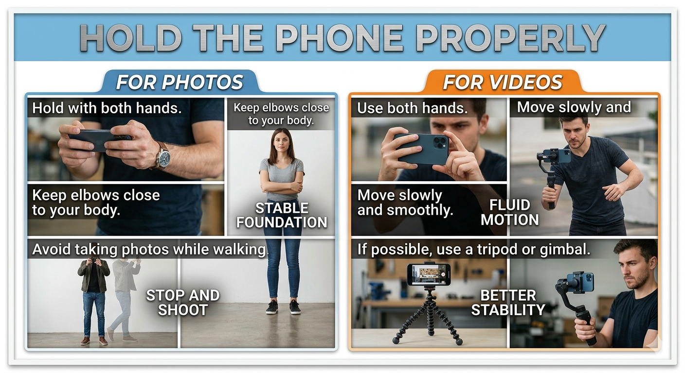
Understand Lighting
Early morning (6:00–9:00 AM) or Late afternoon (4:00–6:30 PM)
Midday sunlight directly overhead causing intense, harsh shadows.
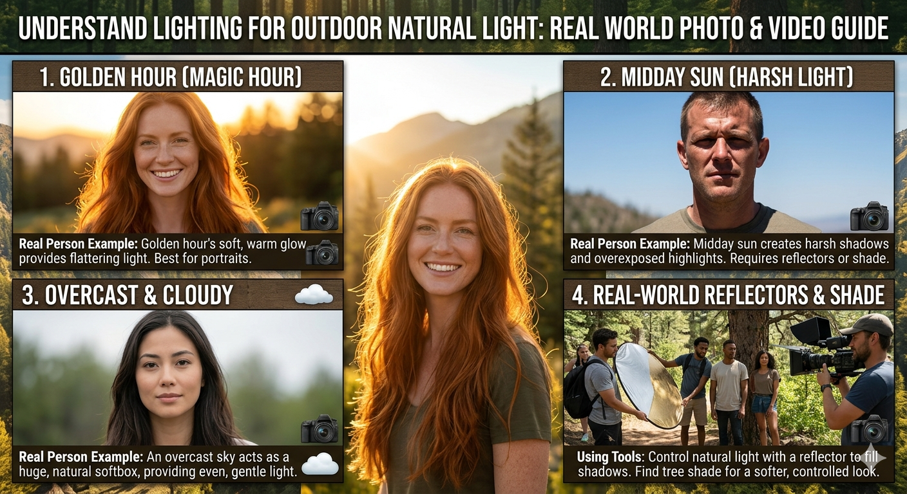
Tap to Focus
Never let the camera guess the subject. Manually program your focal area:
- Tap the subject directly on the smartphone screen.
- Wait briefly for the focus matrix to lock.
- Adjust exposure sliders manually if brightness levels require correction.
This guarantees sharp images with accurate target exposure.
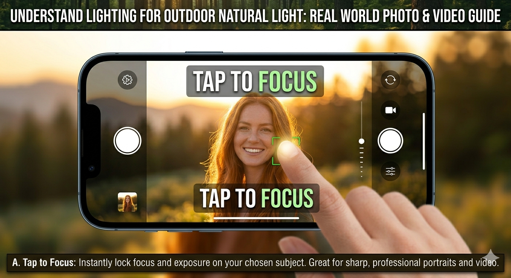
Use Grid Lines (Rule of Thirds)
Enable camera grid lines in your device system parameters. Instead of unthinkingly dead-centering elements:
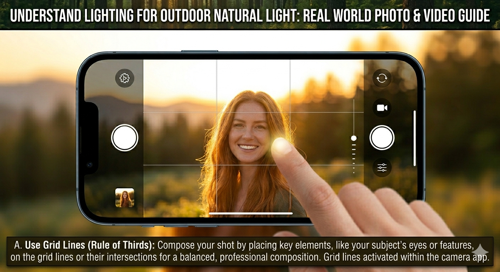
Get Multiple Shots
For each subject captured, capture a comprehensive suite:
Professional researchers reliably capture 5–10 reference images of the same subject.
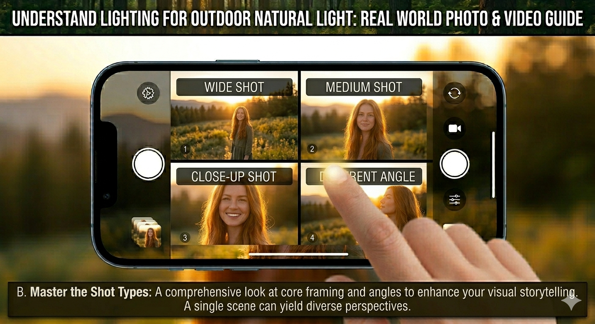
Avoid Digital Zoom
Digital zoom degrades research datasets by blowing up existing pixels and flattening fine textures.
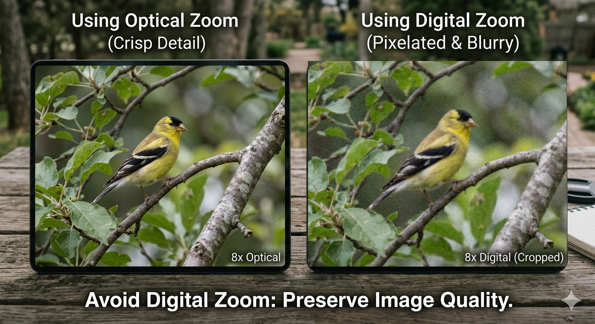
Keep the Horizon Straight
Crooked photos look unprofessional and compromise structural measurements. Use active visual reference coordinates:
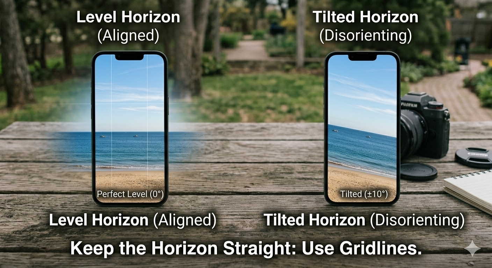
Use Natural Framing
Isolate subjects strategically. Frame target areas using environmental contexts:
This isolates your subject cleanly, creating spatial depth and clearer visual records.
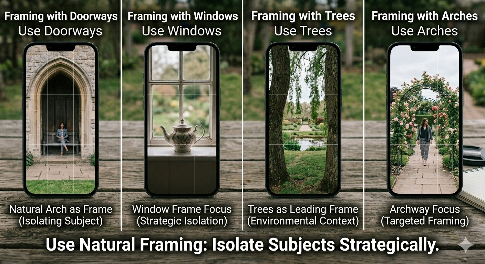
Record Stable Video
- Bend knees slightly to absorb shocks.
- Walk deliberately from heel-to-toe.
- Move smoothly, acting as a human stabilizer.
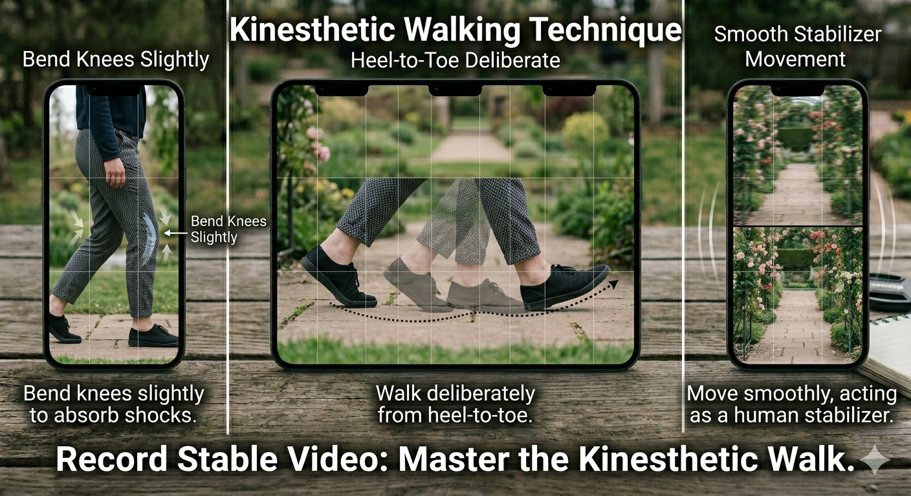
Use Different Video Shots
For comprehensive documentaries and precise field research catalogs, record this mix:
Establishes full contextual environment maps.
Captures ongoing human activity and process interactions.
Isolates specific target features or subject details cleanly.
Documents complex textures, structural inscriptions, tools, and artifacts.
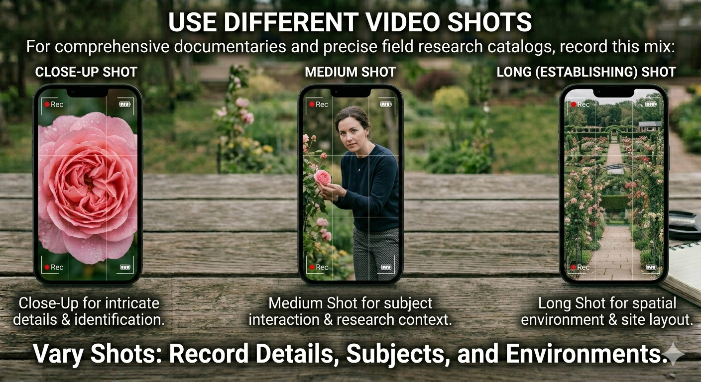
Record Good Audio
- Stand or sit as close to the target speaker as possible.
- Angle the device microphone setup away from strong wind streams.
- Deploy a dedicated external lapel/shotgun mic if equipment allows.
- Record 10 seconds of isolated ambient sound to capture room tone.
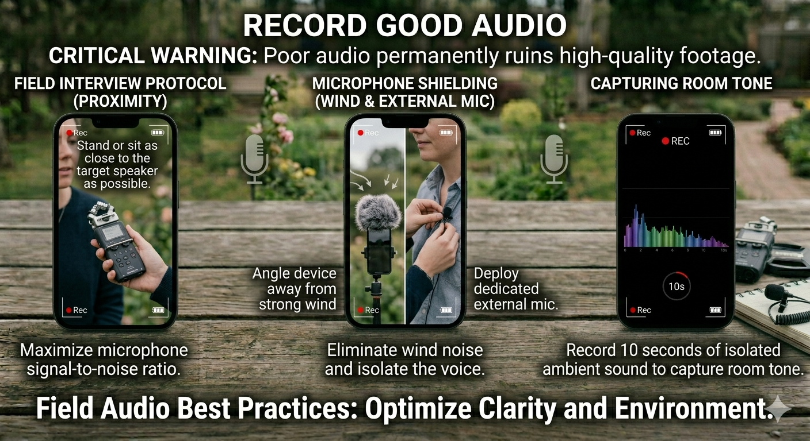
Landscape Orientation for Video
Utilize vertical layouts only if content is specifically intended for native social media distribution pipelines.
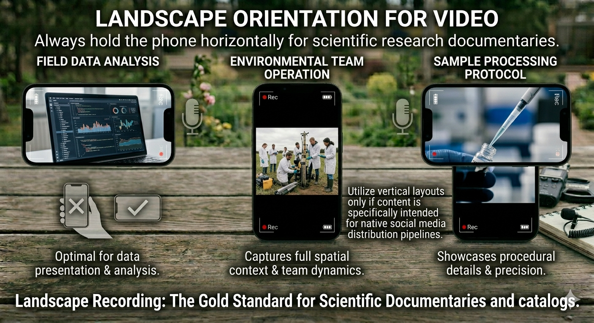
Record B-Roll Footage
Always systematically collect supporting ambient context to frame scientific analysis:
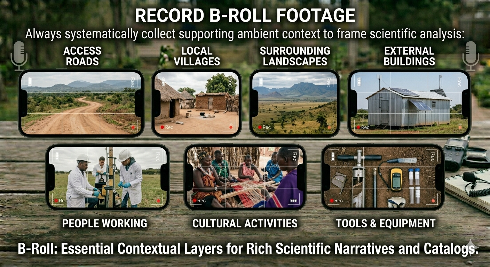
Capture GPS and Metadata
When permitted by local clearance parameters and strict data privacy compliance:
- Enable native location tagging inside application configurations.
- Verify device internal system clock is correctly synched.
This allows verification and geographic mapping down the line.
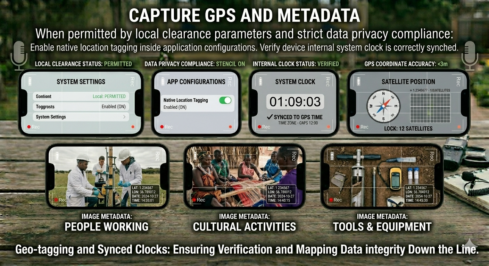
Protect Files Immediately
Post-Field Routine Protocols
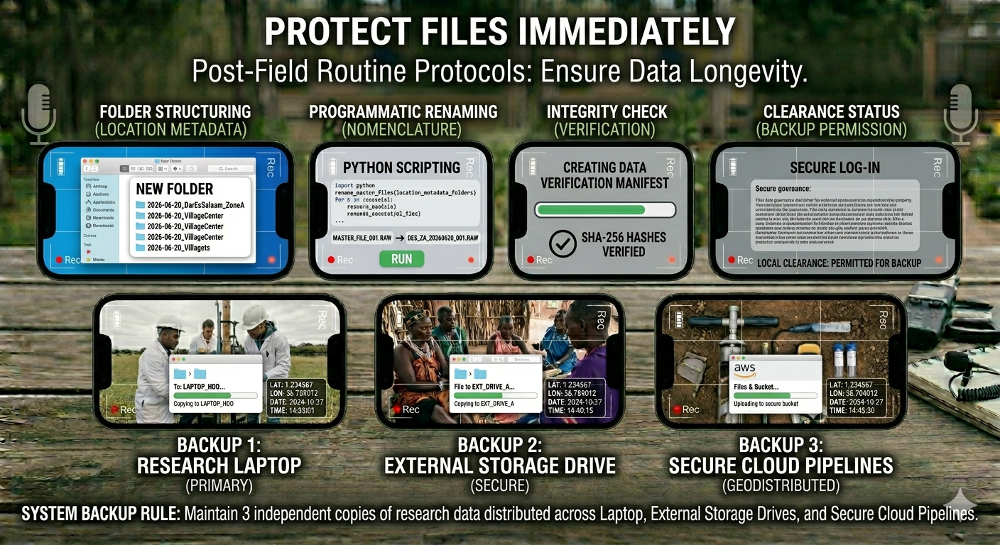
Interview Framing
- Ensure target eyes align directly near the upper-third quadrant of the active frame grid.
- Preserve a marginal spatial gap (headroom) above the target's head.
- Isolate subjects against clean, non-distracting environments.
- Avoid placing hot background highlights (such as windows) directly behind the individual.
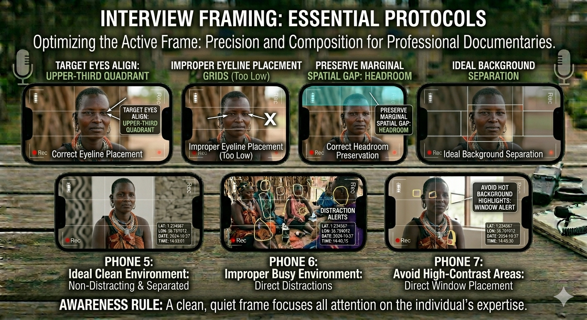
Professional Field Documentation Workflow
For every site deployment, execute this strict production pipeline without variation:
This workflow is commonly used in heritage documentation, anthropology, cultural research, tourism documentation, and field surveys.
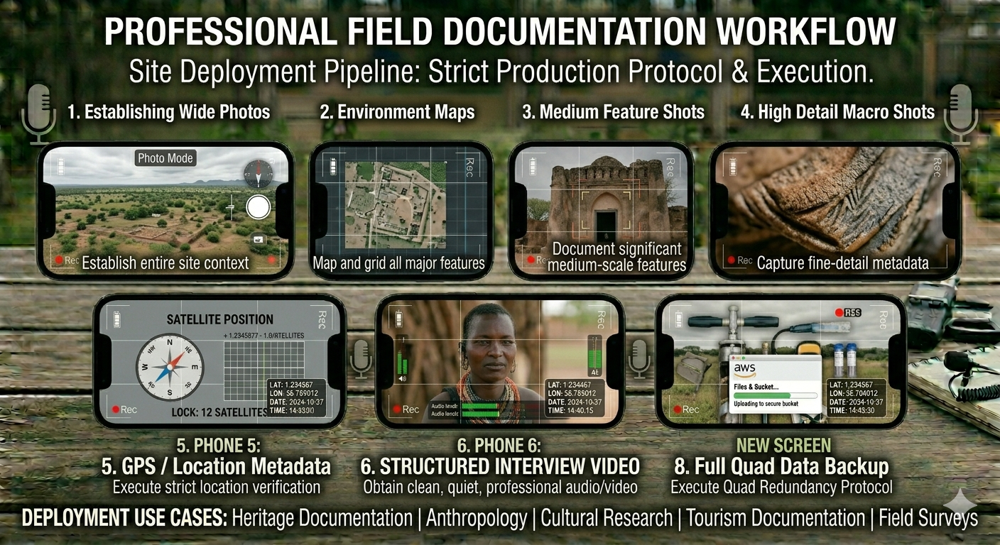